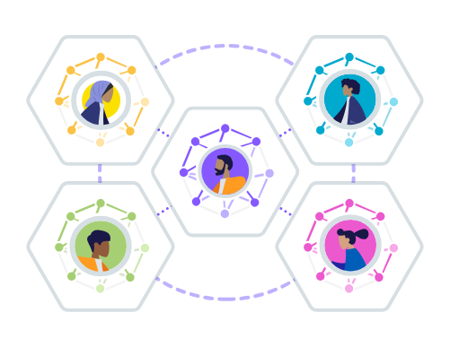
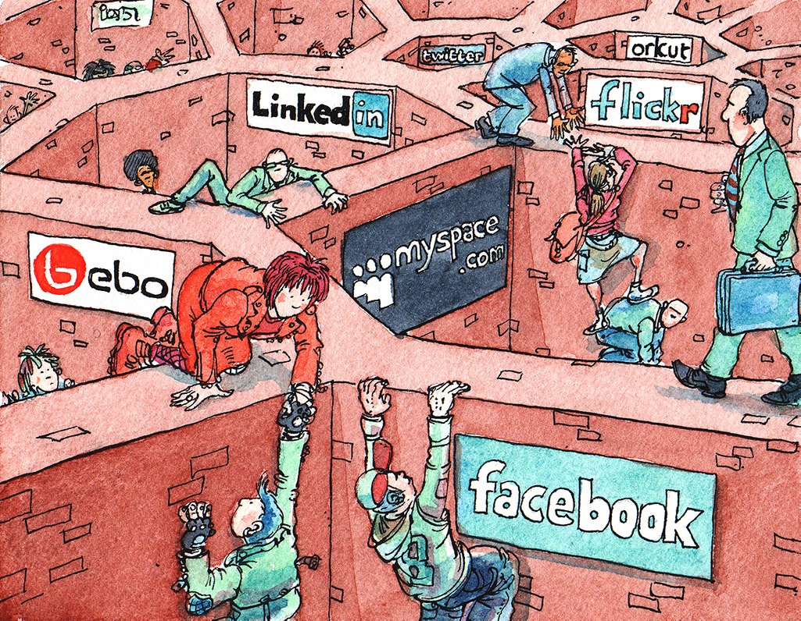

Sir Tim Berners-Lee on Solid and the future of enterprise data
EDM Association + the Open Data Institute
14 July 2026 · 10:00 am EST / 3:00 pm UK
This session will not be recorded
Run of show
14 July 2026 · 10:00 am EST / 3:00 pm UK · not recorded · put your questions in the chat throughout
Emma Thwaites · welcome & introductions
Emma Thwaites · a brief word on the ODI
The Open Data Institute is a mission-driven non-profit, co-founded in 2012 by Sir Tim Berners-Lee and Sir Nigel Shadbolt, working towards an open, trustworthy data ecosystem where data works for everyone.
Since October 2024 we steward Solid: its standards at the W3C, its codebases, and its global community.
Clients and partners from Microsoft and Google to Barclays, the BBC and the Gates Foundation.
What it is, the problem it solves, and a live demo
Jesse Wright · Project Lead – Solid, the ODI · 10 minutes
Solid is an open-source project, open standard, and movement for a user-centric data storage system, originating from Sir Tim Berners-Lee's lab at MIT CSAIL.
Your data lives in a Pod: a personal or organisational datastore with fine-grained access controls. Apps read and write only with permission, breaking down data silos and keeping data under the control of whoever it describes.
The ODI stewards Solid's standards, codebases, and communities.

Collected, copied and secured many times over, yet rarely current, portable or under your control:
Solid fixes this at the root by decoupling data from applications.

Walled Gardens, by David Simonds
People and organisations keep genuine control of their data as AI proliferates.
Structured, permissioned, attributable data: the right base for AI you can trust.
An agent reads once, with consent, instead of each service scraping its own copy.
As AI agents act on our behalf, the urgent question is what data they act on, and who controls it.
Driven & narrated live by Jesse Wright
Backup · use only if the live demo fails
Visual walkthrough: solidproject.org/engagement
In conversation · 20 minutes
On the table: what Solid is and why it was built · early deployments across government and healthcare · why it matters even more in the age of AI. Put your questions in the chat — we'll come to them next.
Audience Q&A · 10 minutes
Hosted by Emma Thwaites, with Elisa Kendall fielding the data-management and financial-services questions.
Drop your questions in the chat — the moderator will bring them to the panel.
On the panel: Sir Tim Berners-Lee · John Bruce · Jesse Wright · Jim Halcomb · Elisa Kendall
What it is, what we'll build, and how to take part
Jim Halcomb & Elisa Kendall · EDM Association · 5 minutes
Jim Halcomb & Elisa Kendall
A community of practice is a neutral, vendor-independent group where finance, healthcare and government work alongside the people building Solid to make it production-ready for regulated data. Built on 300+ participants in the W3C Solid Community Group; every output MIT-licensed.
Demonstrable deployments in finance, healthcare and government — not slideware.
How Solid binds to the models these industries already rely on — starting with FIBO in finance.
A trusted, neutral way to certify that a Solid service meets a sector's requirements.
Jim Halcomb · get involved
Co-chairs: Jim Halcomb (EDM Association) · Jacobus Geluk (agnos.ai) · Roberto Breitman, Stuart Coleman & Jesse Wright (ODI). FIBO & ontology leadership: Shaun Rolls & Elisa Kendall.
Register and join: hub.edmcouncil.org
Read more: edma-microsite.vercel.app
Co-convened by the EDM Association and the Open Data Institute. This session was not recorded; slides and resources are on the microsite. All outputs published under the MIT licence.